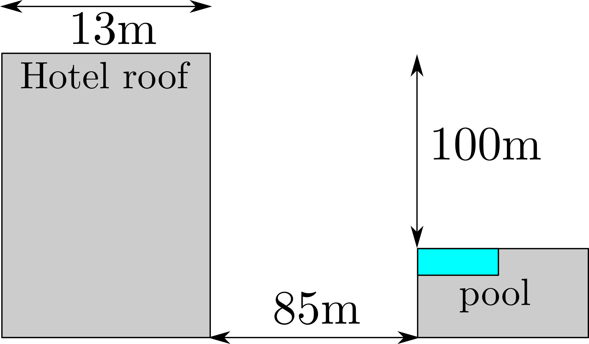
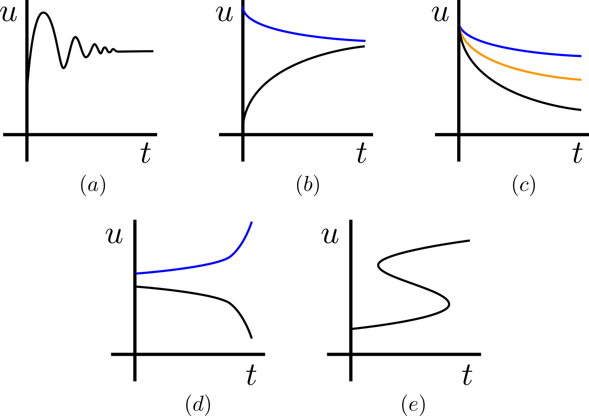
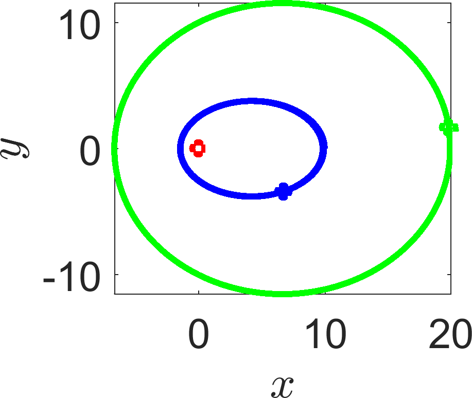
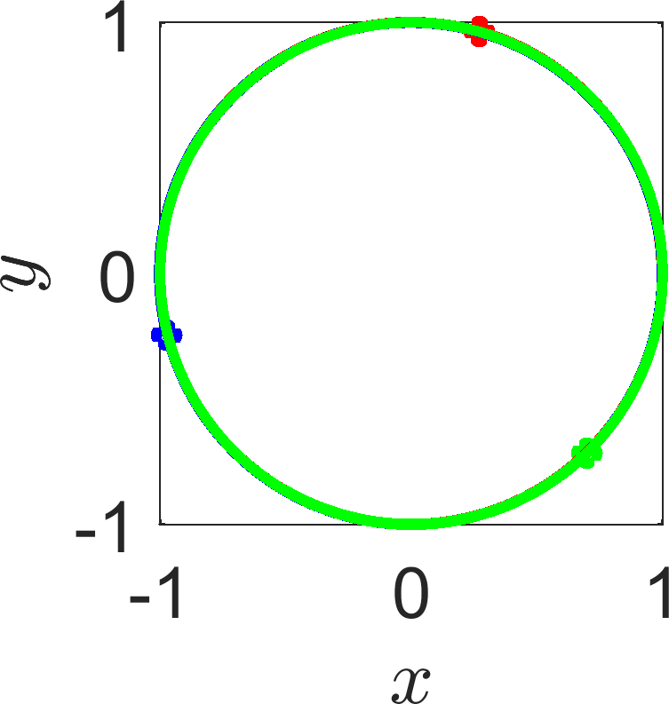

1. Carbon dating
Radioactive carbon-14 in the atmosphere combines with oxygen to form carbon dioxide. This carbon dioxide is ingested by plants, which in turn are eaten by animals. In this way all living plants and animals absorb quantities of radioactive carbon-14.
When a plant or animal dies, the carbon-14 in the tissue begins to decay. Thus, the age of an artefact that contains plant or animal material can be estimated by determining what percentage of its original carbon-14 content remains.
The carbon-14 content of organic matter decays exponentially. Thus, the percentage, \(p\), of carbon-14 in an artefact is defined by
\[\dot{p}=-0.000121p,\quad p(0)=100\%, \tag{1}\]
where 0.000121/year is the decay constant for carbon-14.
In 1988 the Vatican authorised the British Museum to date a cloth relic known as the Shroud of Turin (see Figure 1). This cloth, which first surfaced in 1356, contains the negative image of a human body that was widely believed to be that of Jesus. The report of the British Museum showed that the fibres in the cloth contained between 92% and 93% of their original carbon-14.
Use the above information to estimate the age of the shroud.
State an assumption that has been made which will cause the answer to be incorrect.
The Turin Shroud.
2. Hinged door
Fire doors are usually attached to damped spring hinges so that they cause a door to return to a closed position, rather than stay open. The position, \(y\), of the door can be modelled as a damped oscillator, where the damping is proportional to the door’s speed, \(\dot{y}\),
\[\underbrace{\ddot{y}=-ky}_{\textrm{Simple harmonic motion}}-\underbrace{a\dot{y},}_{\textrm{Motion damping}}\quad y(0)=y_0, \dot{y}(0)=0. \tag{2}\]
where \(k\) and \(a\) are positive constants.
Substitute the solution form \(y(t)=A\exp(\lambda t)\) into equation (2). What values must \(\lambda\) take in order for this solution to exist?
Describe the solutions you get in the two different cases
\[\textrm{(i)} \left(\frac{a}{2}\right)^2>k,\quad\quad \textrm{(ii)} \left(\frac{a}{2}\right)^2<k. \tag{3}\]
Which case is preferential for a fire door?
3. Motion under gravity
In the 1994 film True Lies a terrorist uses a motorbike to jump off of one building onto another. Arnold Schwarzenegger then tries to follow the terrorist on a horse. However, the horse thinks better of this and stops before jumping (see the clip for yourself https://bit.ly/2lf1HgL). Here are some facts to digest:
The hotel in the film is The Westin Bonaventure Hotel.
The pool the terrorist lands in is 85m away (horizontally) and 100m below (see Figure 2).
The motorbike is a Kawasaki EX500.
The bike has a run-up of 13m along the hotel roof.
The bike has a maximum acceleration of 0-60 mph in 3.76 sec.
A trained racehorse has a maximum acceleration of 13.4 m/s\(^2\).
The acceleration rate due to gravity is 9.81m/s\(^2\).
The horse and rider weigh 700kg.
Using the knowledge that acceleration, \(a\), is the rate of change of velocity, \(v\), over time and velocity is the rate of change of displacement, \(x\), over time, i.e.
\[a=\dot{v}=\ddot{x}, \tag{4}\]
solve the following questions.

Schematic of the jump from True Lies. Not to scale.
Assuming the bike has constant acceleration over time, use the data to determine the maximum acceleration of the bike in m/s\(^2\)? Hint: the linear acceleration is calculated by change in speed divided by time taken.
The acceleration in the \(x\) and \(y\) directions is \(\ddot{x}\) and \(\ddot{y}\), namely the second derivative of the coordinate with respect to time. Assuming the bike was initially stationary and the acceleration was constant over the 13m of the flat hotel roof, how fast is the bike going (horizontally and vertically) at the moment it leaves the rooftop?
At the moment the bike leaves the rooftop, what is the acceleration in the horizontal and vertical directions?
Using the equations from question 3 and the values from point 2 as initial data, how long does it take the bike to fall 100m? How far could the bike travel horizontally in that time? Could the motorbike have made the jump?
Could the horse have made the jump?
What have you assumed? Would altering these assumptions qualitatively change the results of the question?
4. Possible trajectories
Let \(u\) be a general population and \(t\) be time. For each of the sketches in Figure 3 classify each trajectory as (strictly) monotonic (increasing or decreasing) or non-monotonic. Further, state whether (i) a single continuously differentiable autonomous ODE, or (ii) a system of continuously differentiable autonomous ODEs could be behind the trajectories (with different colours representing different initial conditions). Alternatively, state when the trajectories could not be specified as a solution of a system of continuously differentiable autonomous ODEs. In each case justify your answer.

Which sketches could arise from a set of ODEs?
5. Taylor expansion
No, not even I can make these interesting. Practise your expansion skills; it is good for your (mathematical) health. Expand each of the following functions about \(x=0\) (and \(y=0\) as needed) to quadratic order i.e.
\[\exp(x)\approx 1+x+\frac{1}{2}x^2. \tag{5}\]
\(\cos(x)\).
\(\frac{1}{1-x}\).
\(\cos(x)\cos(y)-\sin(x)\sin(y)\).
Finally, using some mathematical software (e.g. Maple, Mathematica, Wolfram Alpha, etc.) expand
\[\frac{x}{1-x-x^2} \tag{6}\]
to sixth order about zero. What is interesting about the coefficients of the powers of \(x\)?
6. Computer simulation
I will be putting a simulation problem on each question sheet to help you gain some coding skills. We will build up the skills slowly so you do not have to worry about being dropped in at the deep end.
If you feel you are ready for a more advanced challenge then all codes in the course are available to modify, have fun.
Finally, all of my codes are written using MATLAB’s programming language. If you feel more comfortable in Maple, Mathematica, Python, etc. then please feel free to code the problem up using your own abilities.
Three body problem
Open up the function. At the top of the code you will see the lines
m1=1;m2=1;m3=1; % Masses
G=1; % Gravitational constant
r10=1;r20=-1;r30=1i; % Initial positions
v10=1i*0.5;v20=-1i*0.5;v30=1i*0.5; % Initial velocitiesThese are the parameters of the code. Currently: all masses are equal to 1; the gravitational coefficient is 1; the initial positions of the masses are (1,0), (-1,0) and (0,1); and the initial velocities are (0,1/2), (0,-1/2) and (0,1/2). Note that the code is written using complex variables as Cartesian coordinates i.e. \((x,y)\) is written \(x+Iy\), or x+1i*y in MATLAB.
Have a play around with the parameters and watch chaos unfurl before your eyes.
Can you find parameters that will create an orbiting solar system? Hint: Make one mass really large and the others small (i.e.
m1=1000, m2=0.01, m3=0.01). Place the first mass at the origin, the second at (10,0) and the third at (20,0) (i.e.r10=0, r20=10, r30=20). Now play with the velocities to try and cause the massesm2andm3to orbitm1(see Figure 4(a)).Can you find an initial set of positions and velocities that will allow all three bodies to orbit each other in a circle (see Figure 4(b))? Hint: Symmetry is key to this question. All masses must be the same. Place the masses initially on the points of an equilateral triangle. Play with the velocities to try and cause the masses to move in a circle.

(a)

(b)
(a) An orbiting system. (b) Planets chasing one another.
Exam Revision
Here are some questions that are along the same lines as the above that can be saved for exam revision.
7. Drag racing
In order for an object to move over a flat surface the applied horizontal force required to push the object must overcome the friction between the object and the surface. The friction force is proportional to the object’s weight,
\[F=-\mu mg. \tag{7}\]
Since the entire force pushing a dragster forward is due to friction (between the tyres and the road), we expect the maximum force propelling the dragster forward will be when \(\mu=1\).
Use Newton’s second law of motion, (Force=mass\(\times\)acceleration, or \(F=m\ddot{x}\)) to calculate the time a drag racer would take to complete a standard quarter-mile course (402.34 metres).
On June 2, 2001, Kenny Bernstein set the world record for a quarter-mile track with a time \(t = 4.477\) seconds. What assumptions have we made that cause us to overestimate this time?
8. Newton’s law of cooling
\[\dot{T}=k(T_\infty-T). \tag{8}\]
You can find the temperature inside your refrigerator without putting a thermometer inside. Take an item out of the fridge that has had a chance to acclimatise to the temperature inside the fridge. For example, a can of fizzy drink would be perfect. Let the can warm for one minute and take its temperature. Let it warm for another minute and record its temperature again.
Suppose that the readings are \(T(1) = 5^{\circ}\)C and \(T(2)=8^{\circ}\)C and that the ambient temperature is 17\(^{\circ}\)C.
What is the temperature inside the fridge?
Measurements are prone to error. Suppose your first and second measurements have an error of \(\pm10\%\). Namely, the first measurement could be anywhere in the range [4.5,5.5]\(^{\circ}\)C and similarly the second measurement could be anywhere in the range [7.2,8.8]\(^{\circ}\)C. What are the possible maximum and minimum temperatures inside the fridge?
Why would it be problematic if we measured the second temperature after a much longer time?
9. More Taylor
Expand to quadratic order
\(\sin(x)\).
\(\cos(\sin(x))\).
\(\sin(\cos(x))\).
\(1/\cos(x+y)\).